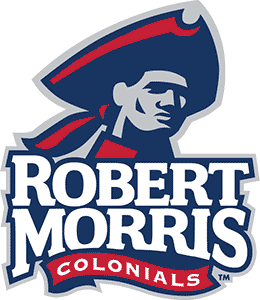

Atlantic Hockey America
Mercyhurst
Mercyhurst is 10-5-1 and 13th in the NPI. Across 500 simulated seasons its median NPI finish is 11th, with a 95% range of 7th to 15th. ELO expects about 8 wins in the next 10.
Next 10 games
- Fri, Nov 20

at Robert Morris83% - Sat, Nov 21vs Robert Morris89%
- Fri, Nov 27
 vs RIT86%
vs RIT86% - Sat, Nov 28vs RIT86%
- Fri, Dec 4
 vs Lindenwood92%
vs Lindenwood92% - Sat, Dec 5vs Lindenwood92%
- Fri, Jan 1
 vs Colgate67%
vs Colgate67% - Sat, Jan 2vs Colgate67%
- Fri, Jan 8
 at Syracuse71%
at Syracuse71% - Sat, Jan 9at Syracuse71%
Win chances from ELO; the dot is stronger the more lopsided the game.
Projected NPI finish
500 simulated seasons, remaining games decided by ELO win chances. Dashed line: median. Shaded: 95% range.